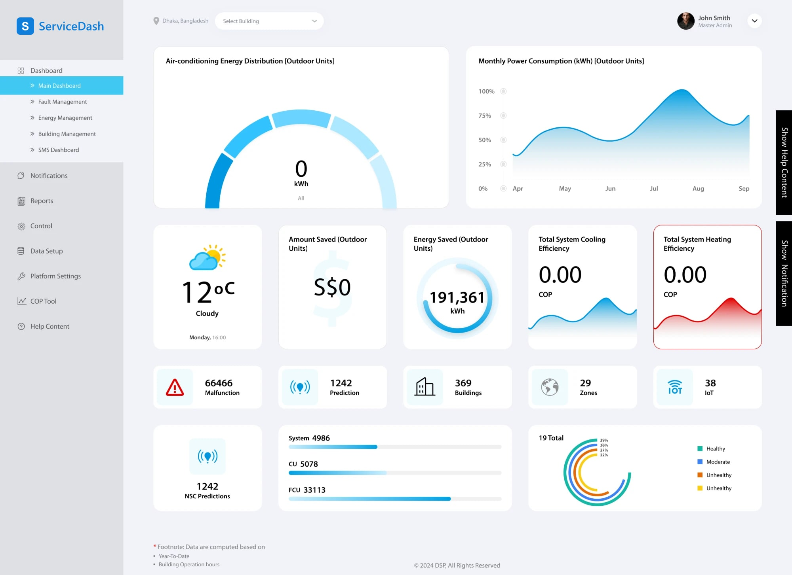
Service Management Dashboard & CRM UI
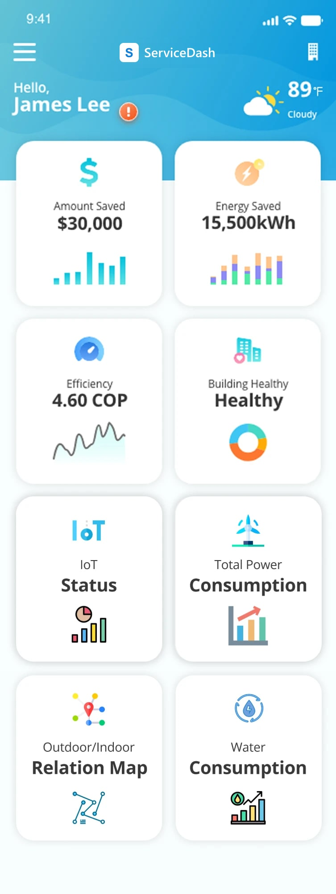
Overview
This is an internal management system for tracking service units, requests and maintenance history. The dashboard had to present dense operational data clearly, so that staff could scan it and act on it quickly.
In a data-heavy internal tool like this, the design work was less about visual decoration. It was more about information hierarchy: making sure that the most actionable data, such as open requests and SLA status, appeared first.
- Data-dense dashboard UI
- Service & maintenance tracking
- Open requests & SLA status first
- Consistent status tags for fast scanning
Information hierarchy
The order in which data appears on the screen.
- 1Open requestsThe most actionable data, placed at the top.
- 2SLA statusShown together with the open requests.
- 3Status tagsScheduled, Review and OK, in one consistent style for fast scanning.
- 4Service & maintenance recordsService units, requests and maintenance history.
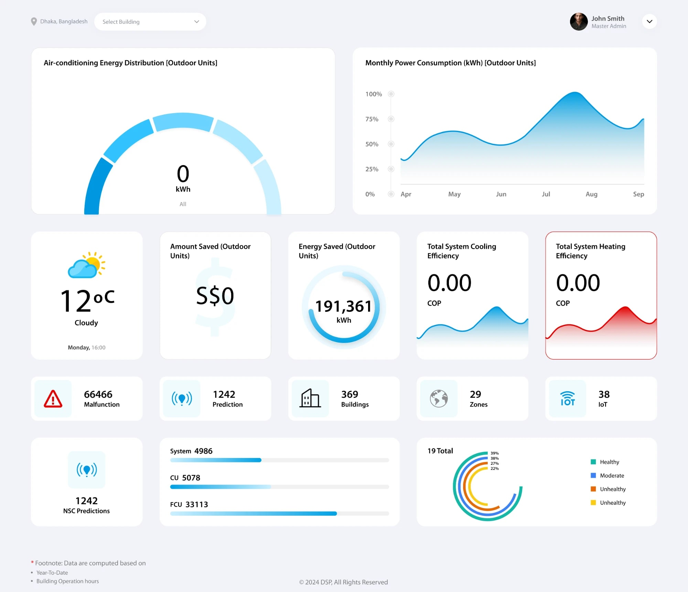
Design system
I set up a compact type scale and consistent tag styling for statuses such as Scheduled, Review and OK. This lets staff scan dozens of rows at a glance without the interface feeling cluttered. The same components carry across the web dashboard and the mobile views.
- Data table, status tag and KPI card components
- Compact type scale for dense data
- Consistent styling across web and mobile
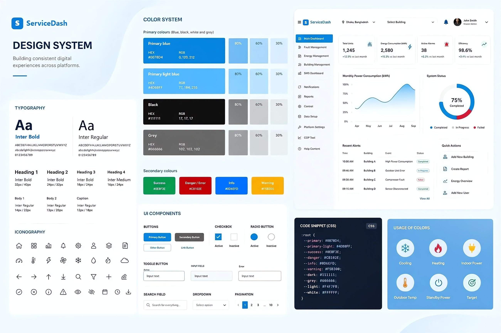
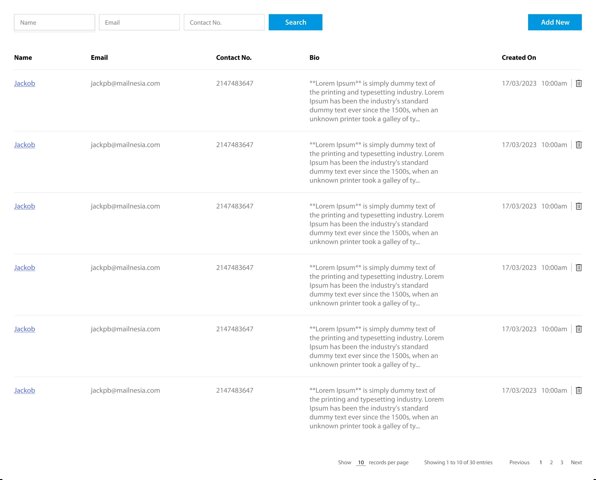
Data table
| Event | Status |
|---|---|
| High Power Consumption | Completed |
| Outdoor Unit Error | In Progress |
| Compressor Fault | Failed |
| Sensor Disconnected | Completed |
Status tags
32px / 40px
24px / 32px
18px / 24px
16px / 24px
14px / 22px
13px / 20px
12px / 18px
Compact type scale
KPI cards
Selected screens
Screens from the dashboard and the mobile views. They cover reports, service tracking and unit records.
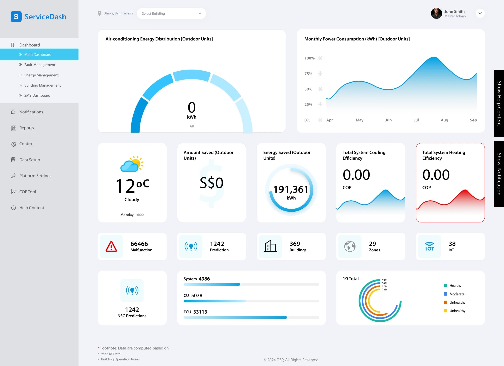
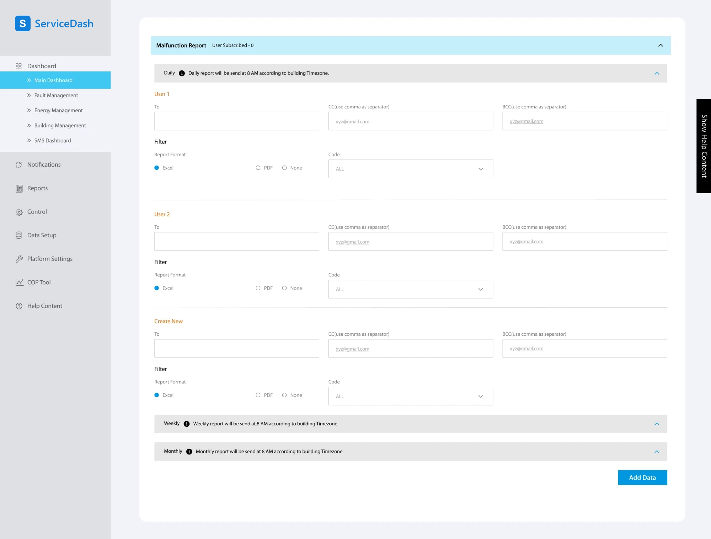
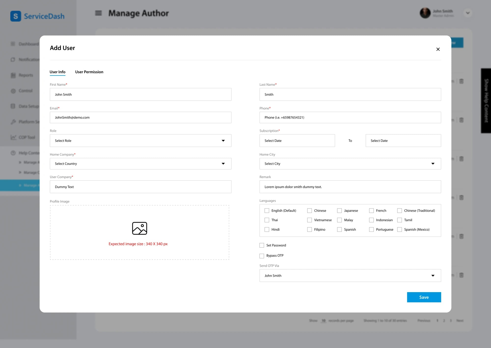
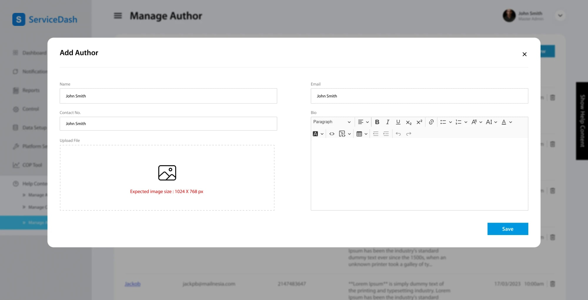
Mobile views
The mobile views use the same components as the web dashboard.
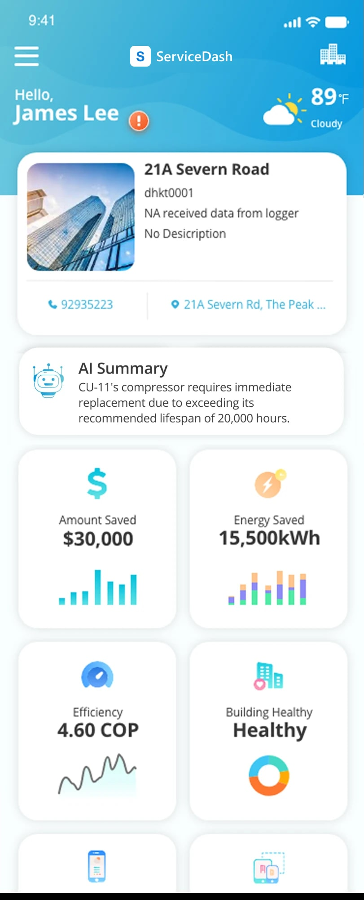
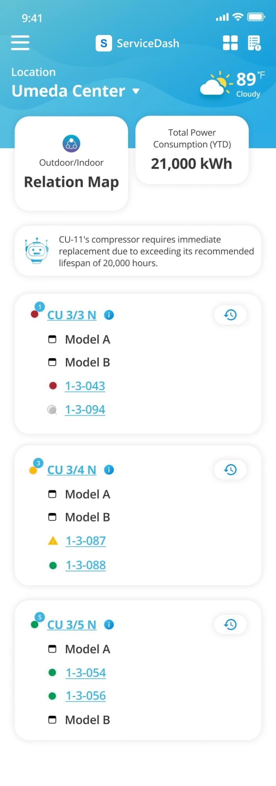
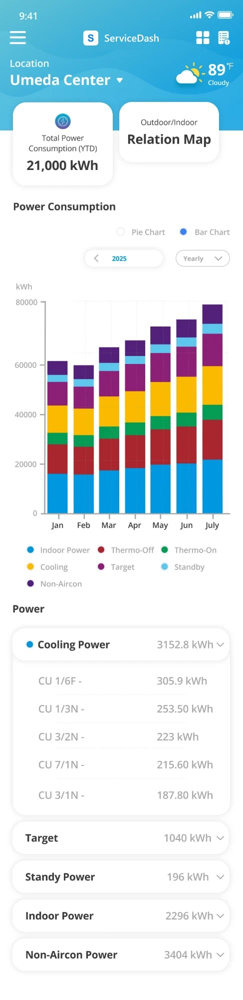
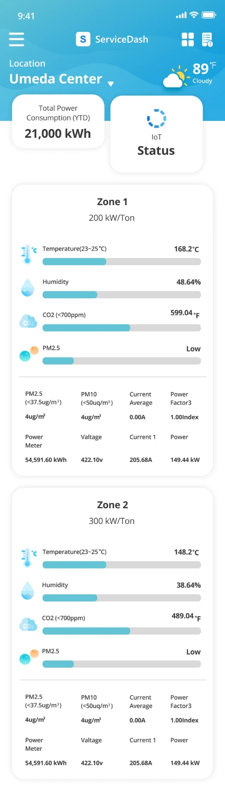
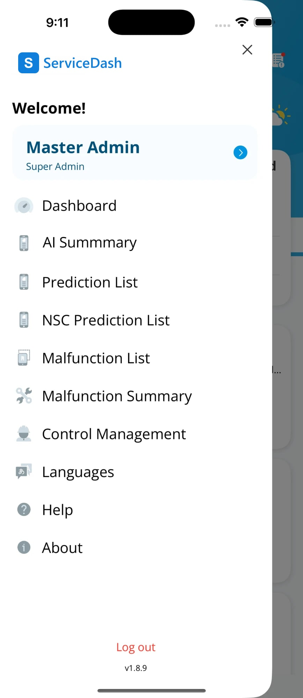
Challenges & solutions
Challenge
The dashboard had to show dense operational data, and staff needed to scan open requests and SLA status quickly. Too much detail at once would slow them down. It would also hide the items that needed action first.
Solution
I set a clear information hierarchy that pushed the most actionable data to the top. I used calm and consistent status colours and kept the layout easy to scan. Staff could then read the state of the system and act in seconds.
Recent Alerts
| Time | Building | Event | Status |
|---|---|---|---|
| 10:00 AM | Building A | High Power Consumption | Completed |
| 09:46 AM | Building B | Outdoor Unit Error | In Progress |
| 09:30 AM | Building C | Compressor Fault | Failed |
| 09:15 AM | Building D | Sensor Disconnected | Completed |
Quick Actions
Conclusion
I built the dashboard directly in HTML. This kept the handoff simple for a smaller internal tool. It still followed the same component discipline that I use on larger projects.
The result is a dashboard that shows what needs attention first. For an internal ops tool, this matters more than any amount of visual polish.
Related work

City Seva App: Citizen Services App